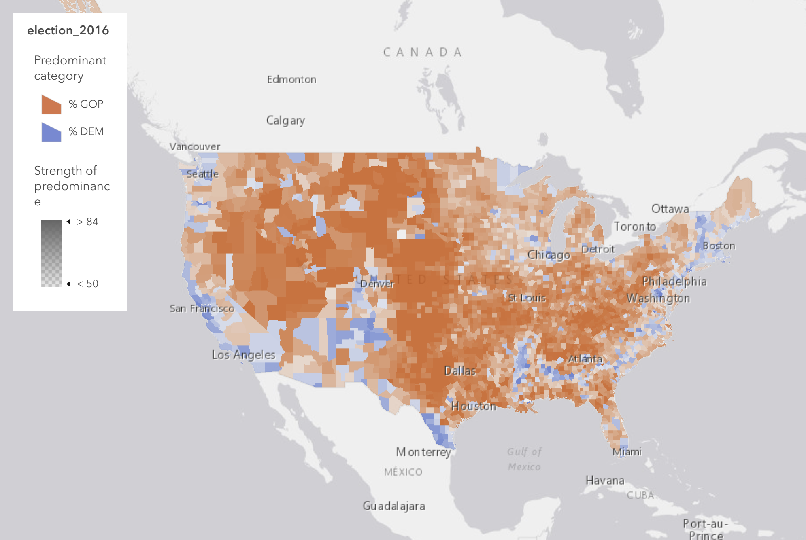
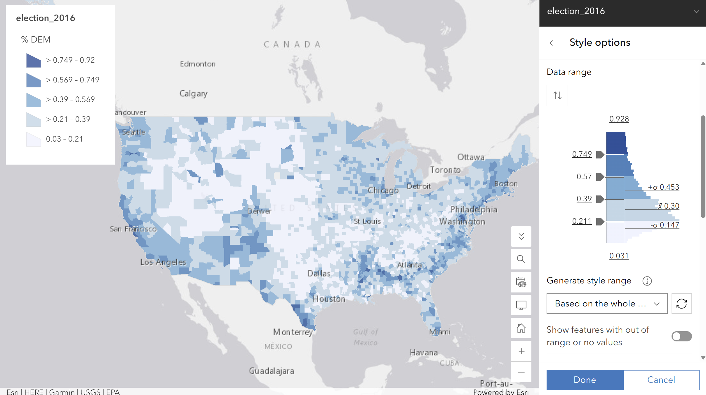
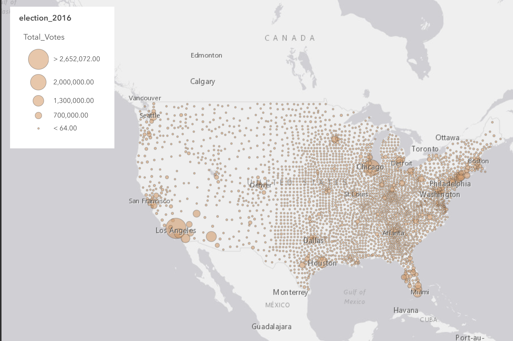
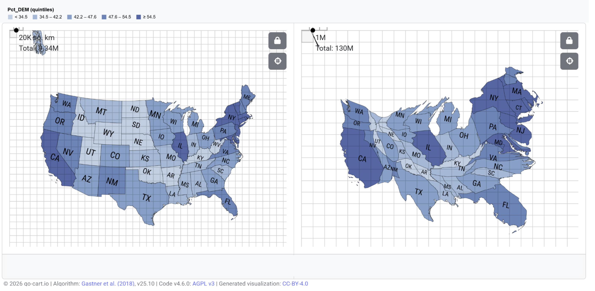

Lab 02 · September 2026
Entry 2: 2016 USA Election
The question
Where were the majority of voters in the 2016 USA Presidential Election?
The data
Layer: elections_2016 Polygon Layer Link: https://services2.arcgis.com/j80Jz20at6Bi0thr/arcgis/rest/services/election_2016_v2/FeatureServer Last Updated: May 20, 2019 at 6:38pm Author: Teach_with_GIS Limitations Found: Column titled DEM_votes is empty and serves as a decoy, whereas the similarly named field votes_DEM contains the necessary information. Percentage unit is misleading, and should be labeled as DEM_per because these data values represent proportions not percentages. DEM and GOP votes do not sum to 1, as votes for third parties were not included and not counted towards the total. Data rows for Alaska have identical numbers, duplicately counted 28 times, which inflates measurement values. Summing the layers produces a total of much less than the certified 2016 voting results, meaning there is a reconciliation gap and some states are undercounted.
The method
Map 1a Hue: GOP was set to red, while DEM was set to blue to mirror party colors for easy identification. Map 1b Hue: DEM_per identified as a rate of DEM votes over the Total votes in a given county. Class count is 5, and the classification scheme is Equal Interval. Breaks are at 0.211, 0.39, 0.57, 0.749, and are ruled by the algorithm below: equal_interval: step = (max(v) - min(v)) / k cuts = [ min(v) + i*step for i = 1 .. k-1 ] # every class spans the same RANGE of values. # how many counties land in each is not considered, # so one outlier stretches every cut. Map 2 Size: Dots represent Total Votes rather than a proportion and party, and sizes are set to 3px-36px. Map 3 Value: Z-scores show how far each county deviates from the national county average (which is around 32% Democratic). Values are based on the national population, even when filtered by state. DEM-per display revolves around the given Arcade expression: // Lab 2 - standardised score for % DEM, 2016 // // z = (value - mean) / standard deviation // // The two constants come from the Statistics panel // for DEM_per, with no filter applied. var mean = 0.3174; var sd = 0.1527; return ($feature.DEM_per - mean) / sd; Map 4 Area: Data was taken from LAB02_state-votes-2016.csv and imported to go-cart.io software. Votes for DEM, GOP, and Total were kept the same, while Alaska’s 28 duplicate layers were rectified to just one figure. Cartogram was set to DEM_per using color and area.




What I found
There are subtle differences in viewer perception between various classification schemes. For example, manipulating breaks and intervals allows you to create biased divisions of data. In the comparison between “Equal Intervals” and “Quantile”, the colors and density became much darker, leading to very different conclusions about how widespread support was for the DEM party. “Natural Breaks” was an intermediate between these two, but the divisions are highly dependent on the data set. Each map has its own unique highlights and features, yet also hides and distorts other values. Using Hues allows easy display of data, but certain categories are removed (third-party voters), and the relation between votes and area can be misleading. Using Size, quantity is shown well, but there is a risk of overlap, and no conclusions can be made about party affiliation and who won. I have learned that there must be a tradeoff between keeping certain displays and sacrificing others, depending on the map’s fitness for use. The choropleth maps have shown me the biases inherent in each map– reiterating the idea that people vote, not geographical areas.
What this does not show
Limitations on this layer include the removal of third-party voters (not displayed in any dataset) and non-voters (the relevant populations of each county are based on votes counted). Duplicate rows and undercounted counties contribute to the population gap between this layer’s totals and the expected credited 2016 total. Alias labels also are not representative of calculations in some cases. No source data was found for this election_2016 layer, only the author and last update timestamp.
AI use: No AI tools were used for this entry.